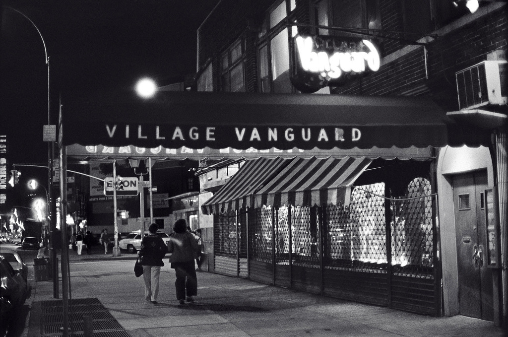
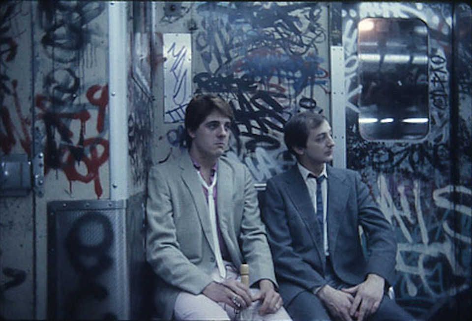
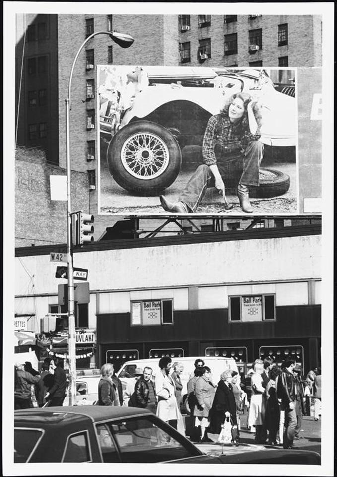

Old meets new.
Old meets new.

WTC, 1976

The Village Vanguard, 1976

89th St between Columbus and Amsterdam (looking West). 1982

3rd Ave and 79th St, 1970s

On their way to a coke party.

Photo byt Matt Weber, 1985

The Cuomo family in 1977

42nd and 8th, 1979

That’s some weird theatrical makeup.

Arturo Vega, Danny Fields, Joey Ramone, and David Johansen outside of CBGB’s, photographed by Bob Gruen.